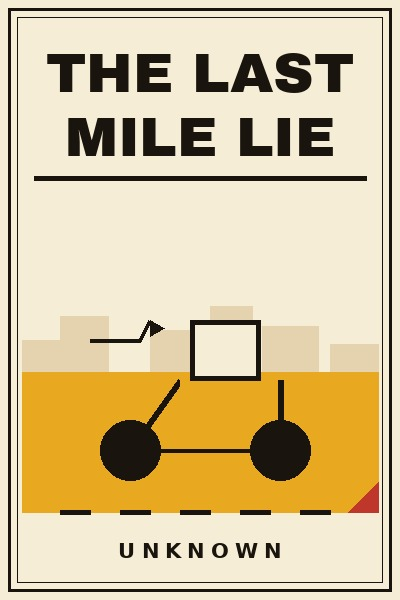
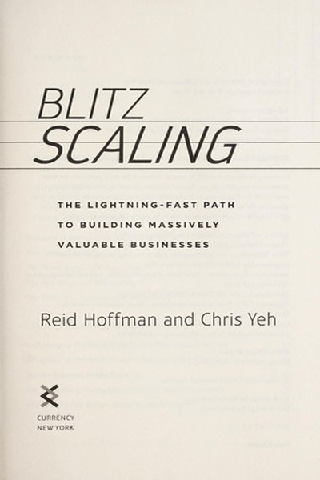
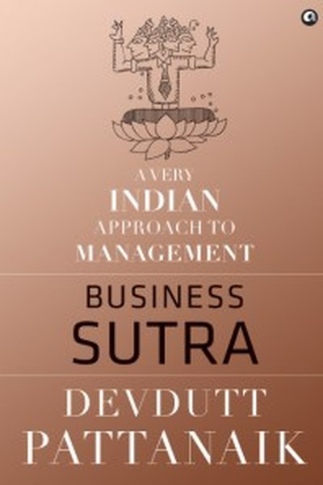
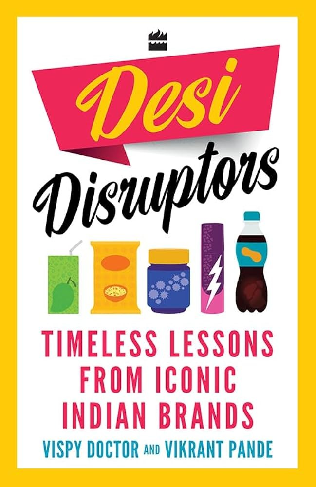

Library › Books like The Dip
10 Books Like The Dip That Hit the Same Nerve
You finished The Dip by Seth Godin and want the same energy: Every worthwhile pursuit has a Dip - the long slog between starting and mastery. Quit dead ends fast; lean int… Here are 10 more that scratch the same itch, each with a free chapter-by-chapter breakdown, key lessons and action steps on this shelf.
 Build, Don't Talk
Everyone's talking. Almost nobody's building. The gap between those two words is your entire career.
READ THE FREE BREAKDOWN →
Build, Don't Talk
Everyone's talking. Almost nobody's building. The gap between those two words is your entire career.
READ THE FREE BREAKDOWN →

The Last Mile Lie Every failed delivery startup died of the same arithmetic: the last mile is where the money goes to die: and the winners learned to make those kilometres pay. READ THE FREE BREAKDOWN → $100M Money Models
Get every customer to pay for the next one. If gross profit in 30 days covers acquisition cost, growth becomes unlimited.
READ THE FREE BREAKDOWN →
$100M Money Models
Get every customer to pay for the next one. If gross profit in 30 days covers acquisition cost, growth becomes unlimited.
READ THE FREE BREAKDOWN →
 Black Box Thinking
Aviation treats every failure as data and got massively safer; healthcare and other blame cultures bury errors and repeat them. Open-loop learning, honest postmortems, marginal gains, that is the whole engine of progress.
READ THE FREE BREAKDOWN →
Black Box Thinking
Aviation treats every failure as data and got massively safer; healthcare and other blame cultures bury errors and repeat them. Open-loop learning, honest postmortems, marginal gains, that is the whole engine of progress.
READ THE FREE BREAKDOWN →

Blitzscaling Sometimes speed is the strategy: grow faster than feels comfortable, and let the problems of scale replace the problem of irrelevance. READ THE FREE BREAKDOWN →
Business Sutra: Lessons from Indian Mythology Devdutt Pattanaik reads Indian mythology as a manual for the workplace - where identity and belief ('bhava') animate every structure ('yantra'). READ THE FREE BREAKDOWN → Cricket's Balance Sheet
The business of cricket decoded: media rights, player auctions, sponsorship math and the leverage traps, a management course hiding in a scoreboard.
READ THE FREE BREAKDOWN →
Cricket's Balance Sheet
The business of cricket decoded: media rights, player auctions, sponsorship math and the leverage traps, a management course hiding in a scoreboard.
READ THE FREE BREAKDOWN →

Desi Disruptors: Timeless Lessons from Iconic Indian Brands Every iconic Indian brand began with an unspoken consumer truth that somebody finally worked on. This book names the truth behind each brand. READ THE FREE BREAKDOWN →Every summary is free: lessons, examples, action steps, audio in your language.